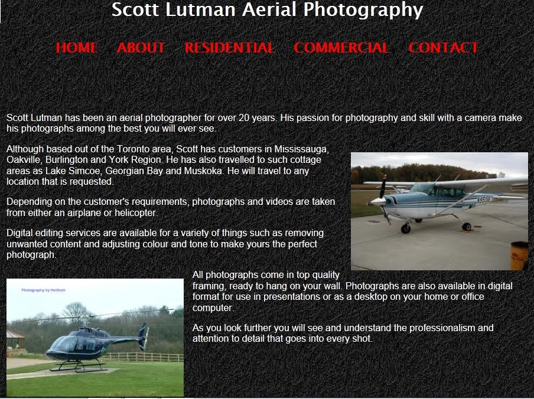

This was a website made for an aerial photographer based out of the GTA. It involved 5 web pages, a slideshow on the home page and approximately 60 photographs of homes and commercials properties divided between two web pages. The residential web page was divided into seasons as well as into repeat seasonal photographs of the same house and pictorial histories of a single house taken over the course of many years and incarnations. I was involved in writing the text for the website, choosing the photos and all layout designs.